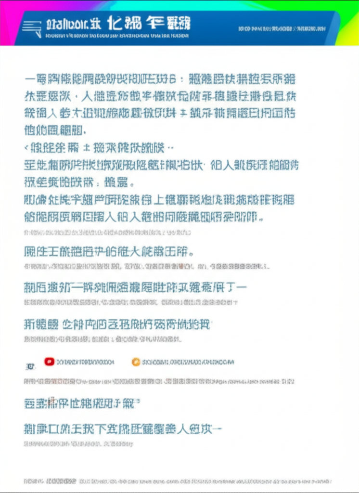

# 新聞摘要與分析
## 引言
本次新聞摘要涵蓋了來自不同來源的資訊，包括Threads、政府公告、媒體平台、財經新聞以及健康資訊等。分析這些新聞可以讓我們了解當前社會關注的議題，例如政治人物的言論、地方政府政策、產業動態、健康問題以及社會事件。
## 主體內容
### 徐巧芯相關爭議
Threads上出現關於徐巧芯的爭議，指責她濫用納稅人的錢來為軍人加薪，甚至有人呼籲罷免她。這反映了民眾對於政治人物行為的監督，以及對於政府預算分配的關注。此事件的後續發展值得關注，包括相關質疑是否會影響徐巧芯的政治生涯，以及政府是否會對此做出回應。
### 彰化縣政府漂流木標售
彰化縣政府溪州鄉公所公告漂流木標售案，這顯示了政府對於自然資源的管理與利用。透過公開標售，可以增加政府收入，並促進木材資源的有效利用。此資訊對於木材業者和對漂流木有興趣的民眾具有參考價值。
### i-Media 愛傳媒
i-Media 愛傳媒強調其以人文教育為主軸的媒體平台，並抱持著媒體讓社會更美好的信念。在網路資訊爆炸的時代，注重人文教育的媒體更顯得重要。此類媒體有助於提升社會的文化素養和價值觀。
### 台中產業動態與財經新聞
工商時報報導了台中地區的產業動態，以及OPEL汽車在台灣的發展。此外，台灣證交所加權股價指數開高，反映了台灣股市的表現。這些資訊對於投資者和關注台灣經濟發展的人士具有參考價值。
### 健康資訊與糖尿病前期
自由健康網報導了糖尿病前期的風險，並提醒民眾注意血糖控制。隨著生活方式的改變，糖尿病的發病率不斷上升，因此了解糖尿病的預防和控制至關重要。此資訊有助於提高民眾的健康意識。
### 其他新聞
其他新聞包括蔡語芯事件、八德地區新聞、全球新聞以及汽車評測等，涵蓋了社會事件、地方新聞、國際局勢以及消費資訊。這些新聞反映了社會的多元面向。
## 結論
本次新聞摘要涵蓋了政治、經濟、社會和健康等多個領域，反映了當前社會關注的議題。透過分析這些新聞，我們可以更全面地了解社會的發展趨勢，並提高自身的資訊素養。持續關注各類新聞，有助於我們更好地適應快速變化的社會。